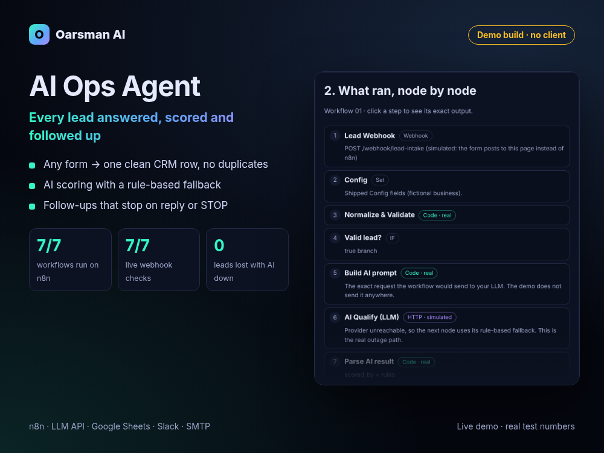

Demo build, no clientReal test numbers
AI Ops Agent: no lead left unanswered
An n8n pipeline that answers, scores, logs and follows up on every inbound lead, and keeps working when the AI provider is down.

Problem
Service businesses lose leads in the gap between the form and a human. Enquiries sit unread, hot leads get the same slow reply as tyre-kickers, and follow-ups depend on someone remembering. Most "AI lead scoring" templates add a second failure point: if the AI call times out or returns bad JSON, the lead is dropped.
What we built
- Intake from any form (Typeform, Tally, Webflow, WordPress, raw JSON): one webhook maps common field names to one schema, validates the email and catches honeypot spam.
- AI scoring with a strict JSON contract: score 0–100, need, urgency, budget band, tier A/B/C or spam. The lead text is treated as untrusted data, and every field of the reply is checked.
- Rule-based fallback when the AI is down or replies badly, so a lead is never lost.
- CRM sheet with no duplicates (upsert by email), an instant reply plus Slack and email alerts for A-tier leads.
- Follow-ups that stop themselves on reply, booking, STOP or when an owner is assigned, plus a daily pipeline report, monthly re-engagement and error alerts with a link to the failed run.
7 workflows, 57 core n8n nodes, no community nodes and no credentials in the files.
Result (tests, not client outcomes)
Source: Lead Autopilot v1.1 test report, 26 Oct 2026. Not covered: real Google, SMTP, IMAP, Slack and LLM accounts, and scoring quality with a real model. There are no client results yet.
Stack
n8nJavaScript Code nodesOpenAI-compatible LLM APIGoogle SheetsSlack Block KitSMTP / IMAPWebhooks
Works with OpenAI, Azure OpenAI, OpenRouter, Groq, Mistral, DeepSeek or a local Ollama model through one base-URL setting.
Honest notes
- This is our own product turned into a demo, not client work. The business in the demo (Acme Growth Studio) and its leads are fictional.
- The live demo runs the workflows' real JavaScript in the browser. It does not call an AI model; it shows the outage fallback, or a hand-written example reply you can edit.
- AI tools helped write the code and this page. Every number above comes from our own test report.